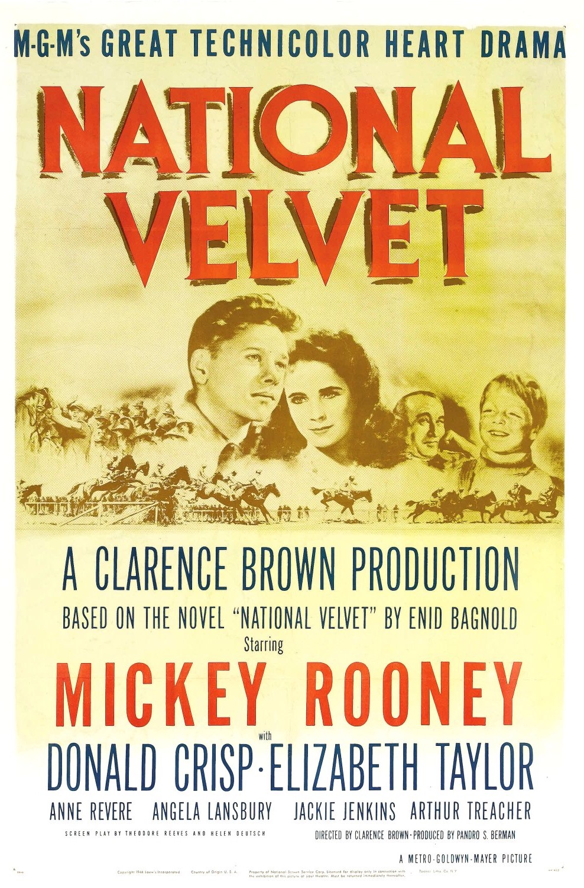

National Velvet
18th Academy Awards
(Oscars 1946)
5 Nominations, 2 Awards
| Nominations | ||
|---|---|---|
| Category | Nominees | Result |
| Actress in a Supporting Role | Anne Revere | Won |
| Directing | Clarence Brown | Nominated |
| Cinematography (Color) | Leonard Smith | Nominated |
| Film Editing | Robert J. Kern | Won |
| Art Direction (Color) | Cedric Gibbons, Edwin B. Willis, Mildred Griffiths, and Urie McCleary | Nominated |